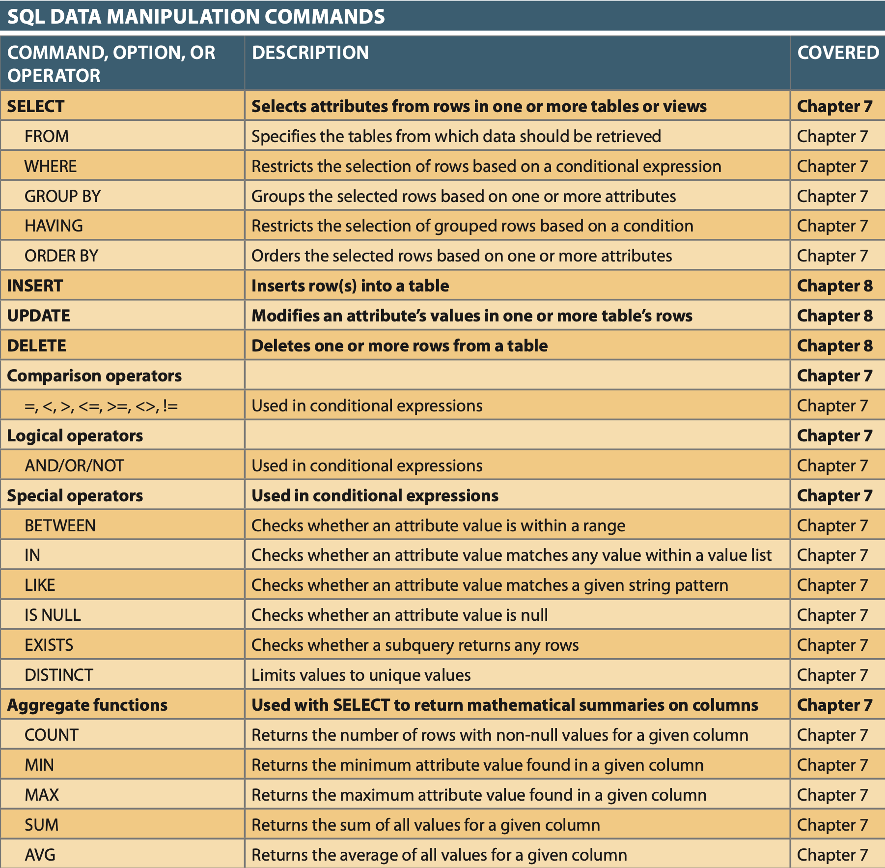
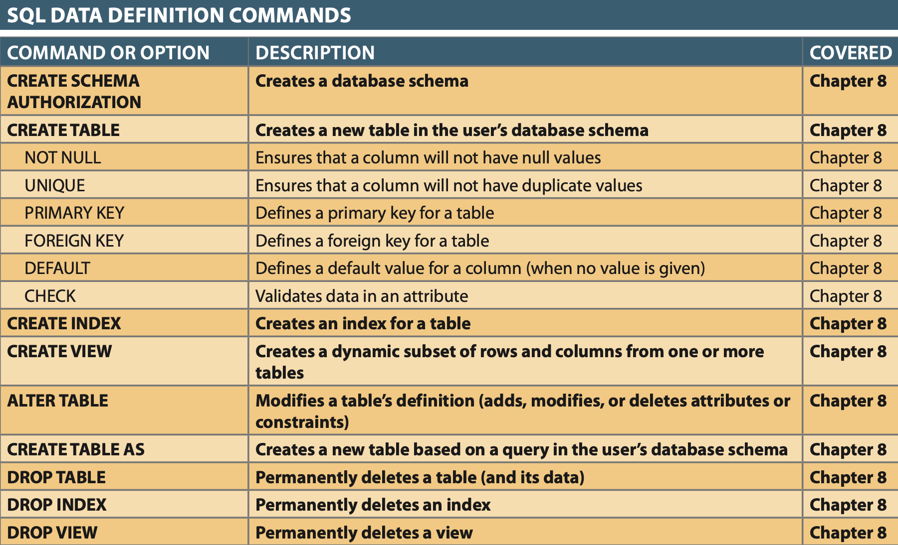
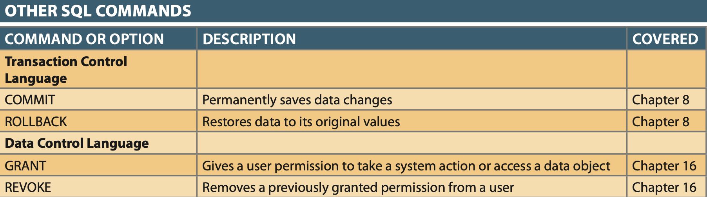
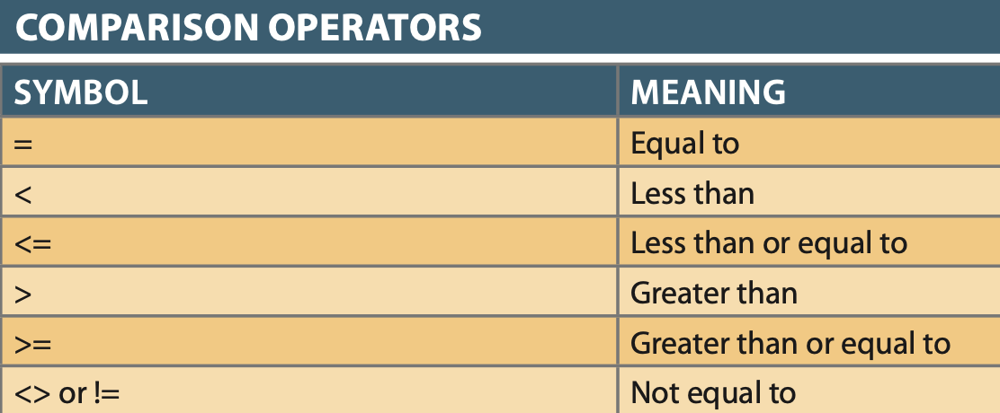
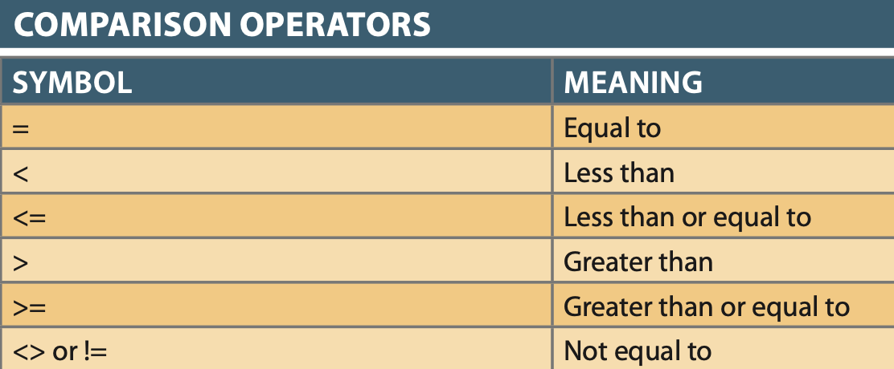

Structured Query Language (SQL)
Structured Query Language (SQL)¶
Criteria for an ideal DB Language, which SQL is!¶
- Create database and table structures, perform basic data management chores (CRUD)
- Perform complex queries designed to transform raw data into useful information.
- Require minimal user effort
- Easy to learn
- Fewer than 100 words in command set
- Declarative, NOT Procedural (i.e. you just declare what you want in SQL and the RDBMS figures out how to get/do your command).
- Portable
- ANSI/ISO SQL standard exist, so only minor dialect differences between competing DB Software manufacturers.
Categories of SQL¶
- Data Manipulation Language (DML): Manipulates data
- INSERT, SELECT, UPDATE, DELETE 
- Data Definition Language (DDL): Creates or alters schema and structure
- CREATE, DROP, ALTER, TRUNCATE, RENAME
- Transaction Control Language (TCL): Manages multiple DML commands from Bus. Rules in transactions.
- A transaction is a logical unit of work of set of DML commands.
- COMMIT, ROLLBACK, SAVEPOINT 
- Data Control Language (DCL): Access Control, security and permissions.
- GRANT, REVOKE 
{kind=link}
{kind=link}
{kind=link}
Queries and Operations¶
Important
Most SQL data manipulation commands operate over an entire table/relation, which is why SQL commands are said to be set-oriented commands. This is important because it allows users to treat SQL commands like building blocks. Once you know the building blocks, you can put them together to declare more complex sets you want.
Intro to Data Types¶
- Data Type is basically the KIND of data that an attribute represents.
- Different RDBMs have similar and different data types, but all DB types fall under 3 categories:
3 Fundamental Types of Data¶
- Character data: Any printable characters such as alphabetic values, digits, punctuation, and special characters.
- Numeric data: digits, such that the data has a specific numeric value.
- Date data: DATES and Times ;-)
Retrieval (SELECT Query)¶
Basic Terms¶
- SELECT: specifies the attributes to be returned by the query
- FROM: specifies the table(s) from which the data will be retrieved
- WHERE: filters the rows of data based on provided criteria
- GROUP BY: groups the rows of data into collections based on sharing the same values in one or more attributes
- HAVING: filters the groups formed in the GROUP BY clause based on provided criteria
- ORDER BY: sorts the final query result rows in ascending or descending order based on the values of one or more attributes.
Basic Structure¶
1 | |
- Column-list: Relational projection of attributes to return.
- Table-list: Relations to be joined in query.
- Wildcard: “*” characters used to designate ALL columns in the relations.
Examples¶
1 2 3 4 5 6 7 8 9 10 11 12 13 14 15 16 17 18 19 | |
Other Notes¶
- When using Arithmetic Operators in derived/calculated columns PEMDAS applies.
- Dates are typically stored as a number in RDBMs as the number of days since a specific date in history.
- Thus Date arithmetic is + or - the number of days.
{kind=link}
Joining¶
Basic Terms¶
- FROM: specifies the table(s) from which the data will be retrieved. Tables joined by PK/FK pairs or a auto selected common attribute..
- NATURAL JOIN: returns all rows with matching values in the matching columns and eliminates duplicate columns.
- Joins on attributes with identical names and data-types
- Joins only common values in chosen attribute(s)
- Eliminates duplicate common attribute
- If no common attributes, returns relational product of 2 tables (i.e. each row from table1 duplicated with each row of table2).
- Usage is discouraged becuase table changes can affect common attribute joins
- JOIN USING: returns only the rows with matching values in the column indicated in the USING clause.
- The column must exist in both tables.
- Eliminates duplicate common attribute
- Only in MySQL and Oracle
- Oracle doesn’t allow usage of table qualifiers can’t be used with the common attribute.
- JOIN ON: joins tables with no common attribute based on equality condition.
- Attributes equality condition must have the same data-type.
- Preferred Join method because its the most widely supported.
- Does NOT eliminate duplicate common attribute(s)
- table qualifier must be used to referr to duplicate common attributes.
- OUTER JOINS:
- LEFT: returns not only the rows matching the join condition, but also the rows in the left table with unmatched values in the right table.
- RIGHT: returns not only the rows matching the join condition, but also the rows in the right table with unmatched values in the left table.
- FULL: returns not only the rows matching the join condition, but also the rows with unmatched values in the table on eithr side.
- Only supported by Oracle and SqlServer
- CROSS JOIN: Cartesian/Relational Product, joins all rows from table1 to all rows in table2
- Not supported in Access
- TABLE ALIAS: A way of renaming a table in a query for 3 common purposes:
- Shortening names
- Improving query human readability.
- Recursive Joins (table joined to itself)
Basic Structure¶
- NATURAL JOIN: SELECT [column-list] FROM [table1] NATURAL JOIN [table2]
- JOIN USING: SELECT [column-list] FROM [table1] JOIN [table2] USING ([common-column])
- JOIN ON: SELECT [column-list] FROM [table1] JOIN [table2] ON [join-condition]
- LEFT OUTER JOIN: SELECT [column-list] FROM [table1] LEFT OUTER JOIN [table2] ON [join-condition]
- RIGHT OUTER JOIN: SELECT [column-list] FROM [table1] RIGHT OUTER JOIN [table2] ON [join-condition]
- FULL OUTER JOIN: SELECT [column-list] FROM [table1] FULL OUTER JOIN [table2] ON [join-condition]
- CROSS JOIN: SELECT [column-list] FROM [table1] CROSS JOIN [table2]
Examples¶
1 2 3 4 5 6 7 8 9 10 11 12 13 14 15 16 17 18 19 20 | |
Sort, Search/Restriction Criteria¶
Basic Terms¶
- ORDER BY: Sorts result rows by list of columns in order from first to last in list.
- NULLS in order by column list results either come first or last depending on the RDBMS
- Oracle allows ordering NULLS with ORDER BY column DESC NULLS LAST; or NULLS FIRST
- WHERE: Adds conditional restrictions to SELECT or search criteria allowing limits to rows in query results.
- 
- Comparison Operators can be used on character data to compare alphebetically left-to-right.
- Numbers or Dates stored incorrectly as character data can produce anomalies when comparison operators are used.
- Logical Operators (AND, OR, and NOT): Allow to test multiple conditions in WHERE condition list
- AND: Used in WHERE or HAVING clause, and all conditions must be true.
- OR: Used in WHERE or HAVING clause, and any of the conditions must be true.
- NOT: negates result of other conditions, turns TRUE to FALSE and vice versa
- Logical operators can be combined, but must be organized with parenthesis.
- 
- Old Syle Joins: Joins that have a comma separated list of tables in the FROM clause and the join conditions in the WHERE clause.
- No longer recommended for 2 major reasons
- Splits joins between FROM and WHERE clauses making them less human readable.
- Susceptable to undetected errors because RDBMS can’t determine if JOIN clauses actually exist syntactically.
- No longer recommended for 2 major reasons
{kind=link}
Note
Most RDBMS search criteria are case sensitive, so its a good idea to wrap column with UPPER() functions before performing comparisons in the following Special Operators.
- Special Operators:
- BETWEEN: Used to check if value is in a range (Always list LOW test value first to avoid Empty results).
- IN: Used to check if value is in a list.
- Used heavily in sub-queries as a subquery can return the list of things to compare to.
- LIKE: Used to match a character pattern
- Like can use multiple wild-cards in its matches.
- ’%’ is a wild-card strings to match anything before, between, or after its appearance.
- ‘_’ is a wild-card to match just a single character wherever it appears.
- Access uses ‘*’ and ‘?’ instead of ‘%’ and ‘_’
- IS NULL: Used to detect NULL values specifically.
- This operator is needed because using the = operator to compare to NULL is undefined, meaning it will always be false, thus yeilding empty results..
Basic Structure¶
- ORDER By: SELECT [column-list] FROM [table-list] ORDER BY [column-list ASC | DESC];
- WHERE: SELECT [columnlist] FROM [tablelist] WHERE [conditionlist] ORDER BY [columnlist ASC | DESC];
- BETWEEN: SELECT [columnlist] FROM [tablelist] WHERE [column] (NOT) BETWEEN [min value] AND [max value];
- IN: SELECT [columnlist] FROM [tablelist] WHERE [column] (NOT) IN ( [comma-sep-value-list] );
- LIKE: SELECT [columnlist] FROM [tablelist] WHERE UPPER( [column] ) (NOT) LIKE [‘pattern to match’];
- IS NULL: SELECT [columnlist] FROM [tablelist] WHERE [column] IS (NOT) NULL;
Examples¶
1 2 3 4 5 6 7 8 9 10 11 12 13 14 15 16 17 18 19 20 21 22 23 24 25 26 27 28 29 30 31 32 33 34 35 36 37 | |
Aggregation¶
{kind=link}
Notes¶
- COUNT typically doesn’t count NULLs, so you’ll want COUNT(*) if you want a row count.
- COUNT can be combined with DISTINCT to only count unique values e.g.
SELECT COUNT(DISTINCT V_CODE) AS CNT FROM PRODUCT; - MAX and MIN are great for getting oldest or newest dates
Basic Terms¶
- GROUP BY: Groups rows into smaller collections by a column list
- Treats all NULLs as if they are the same when grouping.
Basic Structure¶
- GROUP BY: SELECT [columnlist] FROM [tablelist] WHERE [conditionlist] GROUP BY [columnlist] HAVING [group conditionlist] ORDER BY [columnlist ASC | DESC]
Examples¶
1 2 3 4 5 6 7 8 9 10 11 12 13 14 15 16 17 18 19 | |